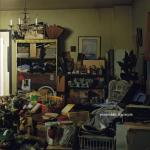
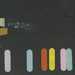
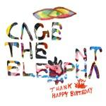
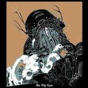
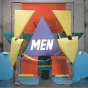
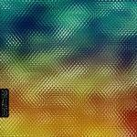

Music Reviews
-

Chapel Club Palace
Chapel Club's debut release, Palace, is one many have been looking forward to for a very long time, so how does it stack up?
Joe Iliff reviews... -

Ensemble Excerpts
Ensemble is crafting pure, modern chamber pop with enough bombastic flourishes that this latest album, Excerpts, hits all the right spots early on.
Matt Montgomery reviews... -
Cloud Nothings Cloud Nothings
He's young, he's angry, and he's catchy as hell. Add Dylan Baldi to your playlist posthaste.
Chris Coplan reviews... -
Disappears Guider
Disappears puts forth a solid effort on Guider, their sophomore release, but has yet to create their masterpiece.
Preston Bernstein rips off his influences... -

Sic Alps Napa Asylum
Sic Alps’ follow up to 2008’s U.S. EZ documents the band’s continuing creative ascent where they may possibly have found their peak.
Sean Caldwell reviews... -

Cage the Elephant Thank You, Happy Birthday
Does the sophomore slump infect the brave heroes of Cage the Elephant? Read on, brave followers!
Chris Coplan reviews... -
Adele 21
Could this be the London-based soul diva's coming of age record?
Gary McGinley reviews... -

The Joy Formidable The Big Roar
This is first real album by the Welsh three-piece, so was the hype worth it, or do we have another awkward NME moment on our hands as we attempt to play a brutal disappointment off as a 'promising' but entirely undeserved 8/10? Let's find out.
Joe Iliff reviews... -

MEN Talk About Body
The two thirds of Le Tigre that aren't Kathleen Hanna return, still tackling the subject of gender politics, but in a newer, slicker package.
Mark Davison reviews... -

Braids Native Speaker
Native Speaker is a stunning full-length debut with music that sounds shrouded in much mystery.
Matt Montgomery reviews...